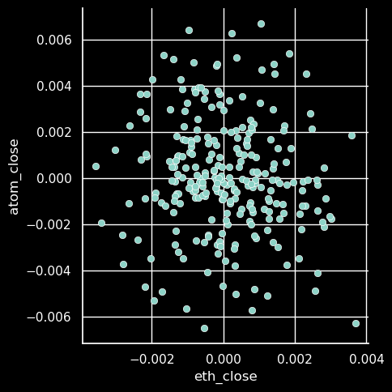

Predicting Crypto Returns with PyTorch
Table of Contents
1. Import Libraries and Get Data
import pandas as pd
import torch
from torch import nn
import seaborn as sns
sns.set_theme(style="darkgrid")
import matplotlib.pyplot as plt
plt.style.use("dark_background")
import cbpro
import time
public_client = cbpro.PublicClient()
eth = public_client.get_product_historic_rates('ETH-USD')
time.sleep(5)
btc = public_client.get_product_historic_rates('BTC-USD')
time.sleep(5)
atom = public_client.get_product_historic_rates('ATOM-USD')
time.sleep(5)
ada = public_client.get_product_historic_rates('ADA-USD')
time.sleep(5)
ltc = public_client.get_product_historic_rates('LTC-USD')
eth = pd.DataFrame(eth, columns=["time", "low", "high", "open", "close", "volume"]) btc = pd.DataFrame(btc, columns=["time", "low", "high", "open", "close", "volume"]) atom = pd.DataFrame(atom, columns=["time", "low", "high", "open", "close", "volume"]) ada = pd.DataFrame(ada, columns=["time", "low", "high", "open", "close", "volume"]) ltc = pd.DataFrame(ltc, columns=["time", "low", "high", "open", "close", "volume"])
ethd = eth[['time', 'close', 'volume']]
ethd.columns.values[1] = "eth_close"
ethd.columns.values[2] = "eth_volume"
btcd = btc[['time', 'close', 'volume']]
btcd.columns.values[1] = "btc_close"
btcd.columns.values[2] = "btc_volume"
atomd = atom[['time', 'close', 'volume']]
atomd.columns.values[1] = "atom_close"
atomd.columns.values[2] = "atom_volume"
adad = ada[['time', 'close', 'volume']]
adad.columns.values[1] = "ada_close"
adad.columns.values[2] = "ada_volume"
ltcd = ltc[['time', 'close', 'volume']]
ltcd.columns.values[1] = "ltc_close"
ltcd.columns.values[2] = "ltc_volume"
data = ethd.merge(btcd, on = "time")
data = data.merge(atomd, on = "time")
data = data.merge(adad, on = "time")
data = data.merge(ltcd, on = "time")
data.set_index('time', inplace=True)
data = data.pct_change()[1:]
data.to_csv("close_vol_data.csv")
data
1.1. Training vs Test Sets
train = data[0:(len(data)-30)] test = data[(len(data)-30): len(data)]
1.1.1. Lag Variables
First pop the targets, which are not lagged.
train_target = train.pop('atom_close')
train_target = train_target[1:]
test_target = test.pop('atom_close')
test_target = test_target[1:]
Lag the RHS variables.
train_features = train.shift(1)[1:] test_features = test.shift(1)[1:]
2. Viz
eth_target_plot = sns.relplot(x=train_features["eth_close"], y=train_target)
eth_target_plot.savefig("eth_target_plot.png")

3. Pytorch Neural Network
train_features = torch.tensor(train_features.values, device='cuda') train_target = torch.tensor(train_target.values, device='cuda')
test_features = torch.tensor(test_features.values, device='cuda') test_target = torch.tensor(test_target.values, device='cuda')
3.1. Build Model
3.1.1. More Simple Model
model = torch.nn.Sequential(
torch.nn.Linear(9, 10),
torch.nn.Linear(10, 1)
)
device = 'cuda' #model = AR_model().to(device) model = model.to(device) model
3.1.2. Training
learning_rate = 1e-3 loss_fn = nn.MSELoss()
for t in range(4000):
y_pred = model(train_features.float()).float()
loss = loss_fn(y_pred, train_target.float())
if t % 100 == 99:
print(t, loss.item())
model.zero_grad()
loss.backward()
with torch.no_grad():
for param in model.parameters():
param -= learning_rate * param.grad
/usr/lib/python3.9/site-packages/torch/nn/modules/loss.py:528: UserWarning: Using a target size (torch.Size([267])) that is different to the input size (torch.Size([267, 1])). This will likely lead to incorrect results due to broadcasting. Please ensure they have the same size. return F.mse_loss(input, target, reduction=self.reduction) 99 0.0893305093050003 199 0.047384943813085556 299 0.028021186590194702 399 0.017340470105409622 499 0.011109192855656147 599 0.00731393788009882 699 0.004917584825307131 799 0.0033594025298953056 899 0.002322547137737274 999 0.0016203098930418491 1099 0.0011383295059204102 1199 0.0008041990222409368 1299 0.0005708118551410735 1399 0.0004068514099344611 1499 0.0002911509945988655 1599 0.00020922270778100938 1699 0.00015104765770956874 1799 0.00010964881221298128 1899 8.013638580450788e-05 1999 5.906675141886808e-05 2099 4.4007199903717265e-05 2199 3.3232950954698026e-05 2299 2.551826946728397e-05 2399 1.9990910004707985e-05 2499 1.602855627425015e-05 2599 1.3186661817599088e-05 2699 1.1147843906655908e-05 2799 9.68440235737944e-06 2899 8.634114237793256e-06 2999 7.879962140577845e-06 3099 7.3384462666581385e-06 3199 6.949339422135381e-06 3299 6.669947197224246e-06 3399 6.469147137977416e-06 3499 6.325087269942742e-06 3599 6.221415333129698e-06 3699 6.146963642095216e-06 3799 6.0935772125958465e-06 3899 6.054961431800621e-06 3999 6.027458766766358e-06
3.1.3. Result
pred_test_target = model(test_features.float())
#print(pred_test_target)
test_loss = (test_target - pred_test_target).abs()
print(f'The mean loss is: {test_loss.mean()}')
print(f'The standdard deviation of the test returns is: {test_target.std()}')
The mean loss is: 0.0020564117175871544 The standdard deviation of the test returns is: 0.002510482820326549
So the model is performing poorly.